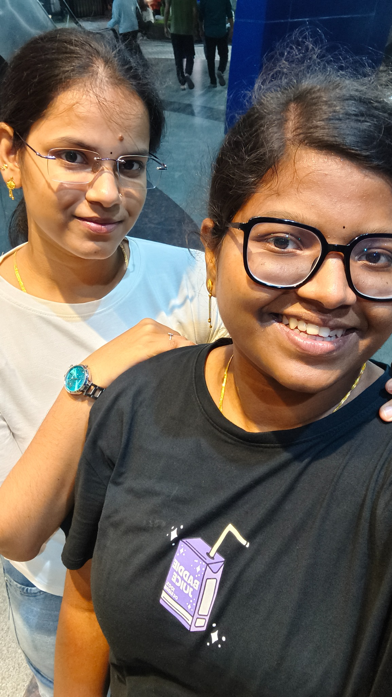
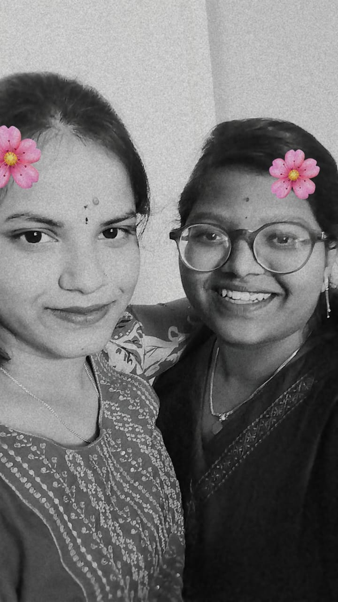
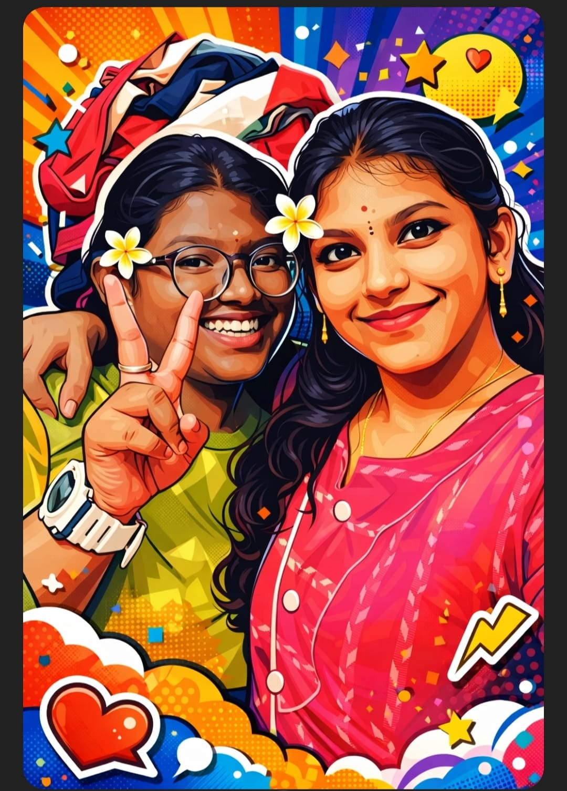
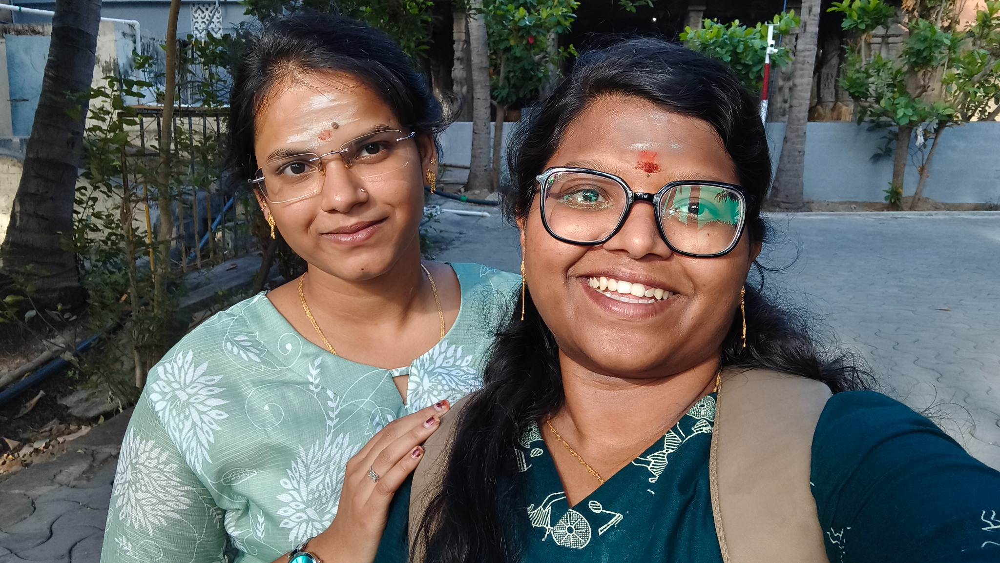
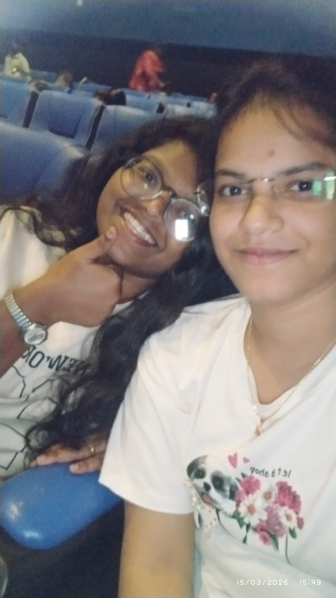

A Beautiful Smile
Some moments don't need a reason to become special.
This one is simply one of those memories I want to keep close.
Six little pieces of our story, saved in one place. Later, we can change every caption into the exact story behind each photo.

Some moments don't need a reason to become special.
This one is simply one of those memories I want to keep close.

A simple picture, but somehow it holds so much warmth.
Looking at this always brings back the feeling of that moment.
That smile says everything without needing any words.
I'm glad I got to be there for this little moment.

Another memory that became part of our story.
These are the ordinary days that quietly become unforgettable.

There is something beautiful about seeing you just being yourself.
This is one of the pictures I never want to lose.

Six pictures can never tell the whole story of us.
But every picture can hold a tiny piece of it. ♡